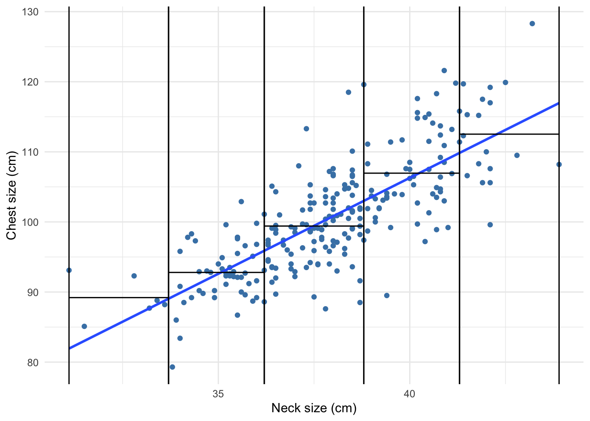
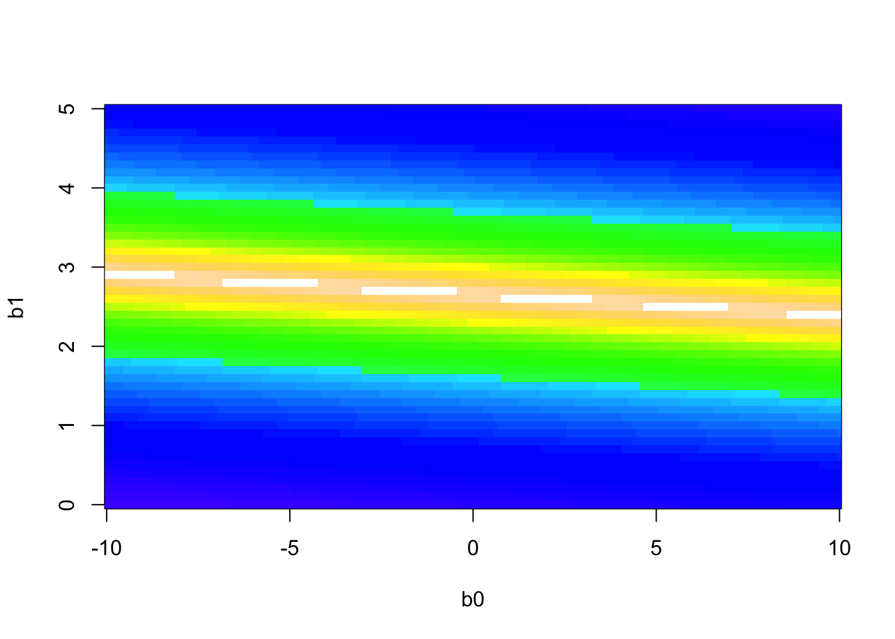
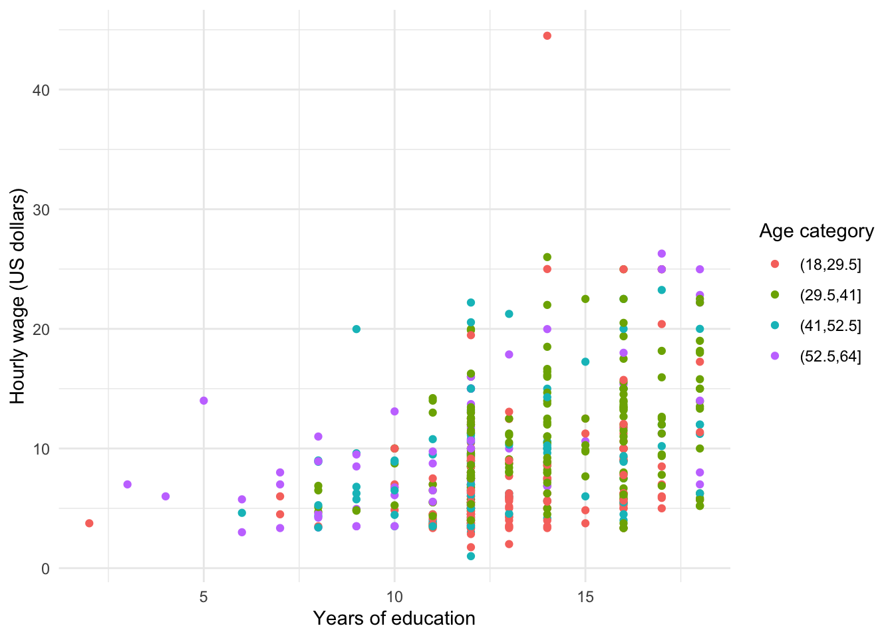
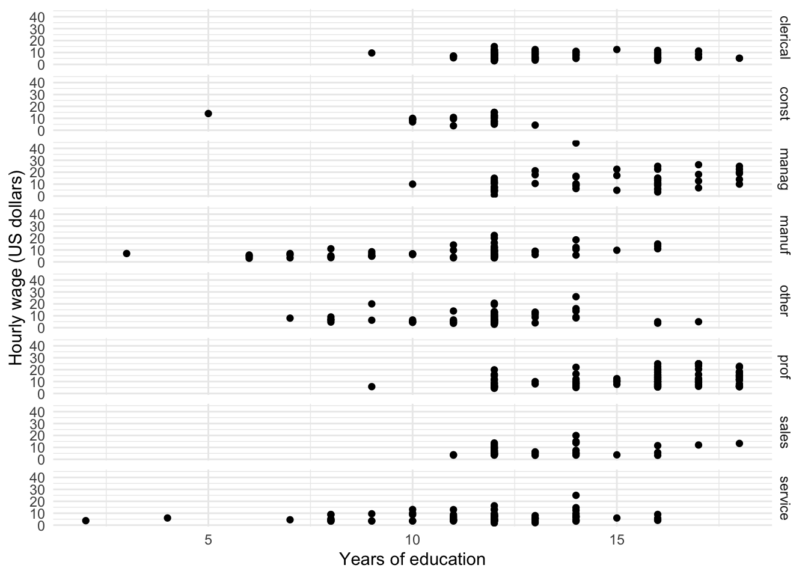
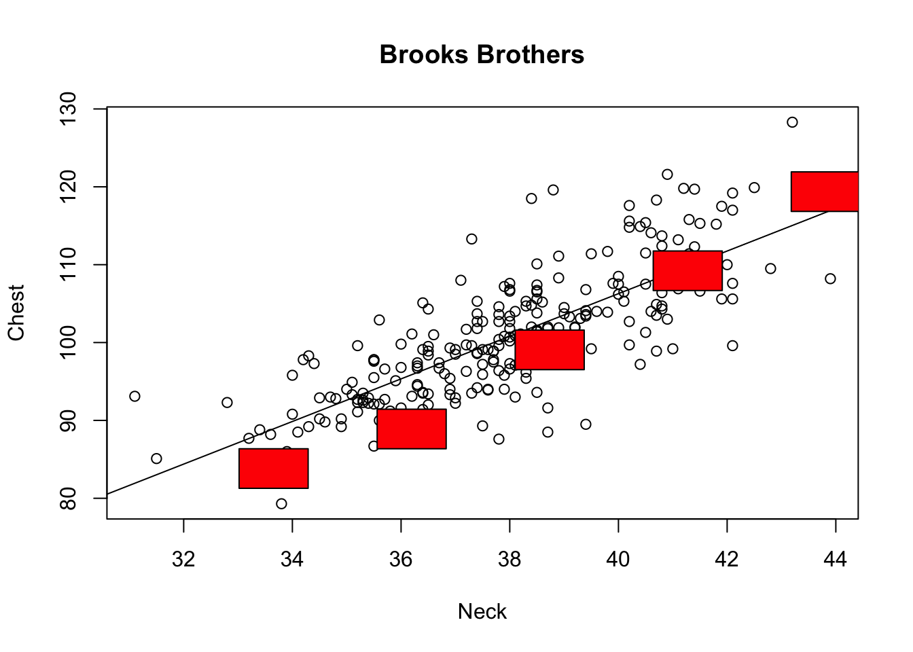
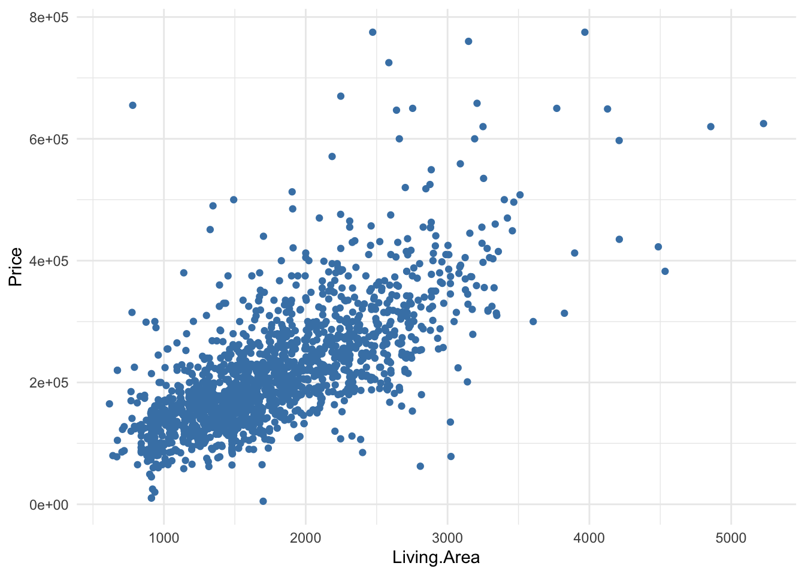
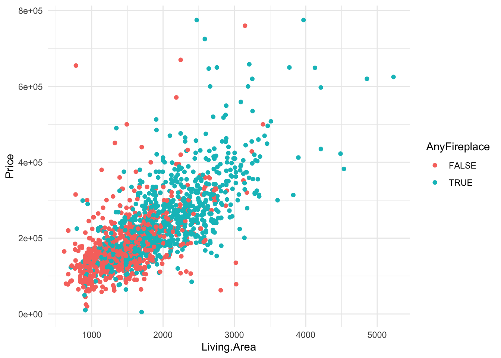
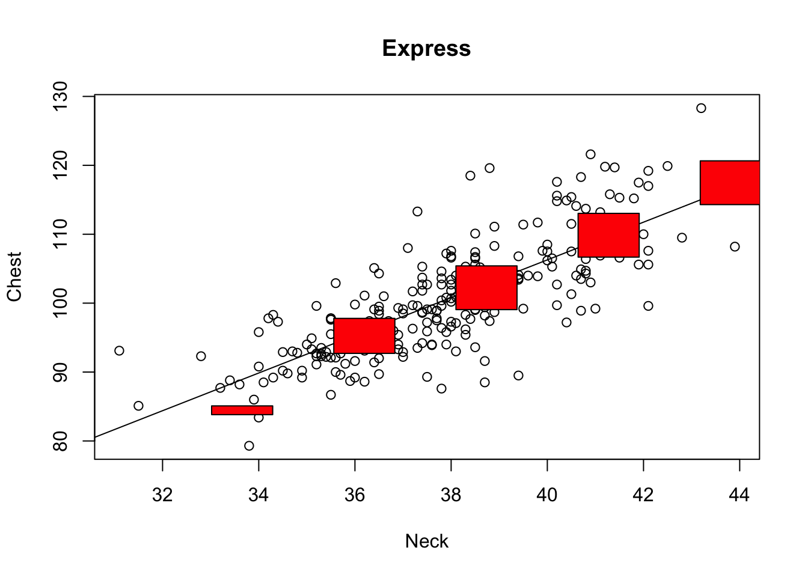

3.9 Multiple Linear Regression
We can generalize the idea of a simple linear model by including many explanatory variables (X’s). A multiple linear regression model can be written as:
\[\hat{y}_i = b_0 + b_1x_{i1} + \cdots + b_kx_{ik}\]
Each coefficient \(b_j\) can be interpreted as the increase in the predicted/average y associated with a 1 unit increase in \(x_j\), keeping all other variables constant. (*There are some exceptions - we’ll get there.)
- These X variables can be:
- Quantitative variables (or transformations of them)
- Indicator variables for categorical variables (only need \(k-1\) indicators for a variable with \(k\) categories)
- Interaction terms (product of two variables, which allows for effect modification)
Let’s talk about a new data example: home prices. We want to build a model to predict the price of a home based on its many characteristics. Here we have a data set of homes recently sold in New England with many variables such as the age of the home, the land value, whether or not it has central air conditioning, the number of fireplaces, the sale price, and more…
## Price Lot.Size Waterfront Age Land.Value New.Construct Central.Air
## 1 132500 0.09 0 42 50000 0 0
## 2 181115 0.92 0 0 22300 0 0
## 3 109000 0.19 0 133 7300 0 0
## 4 155000 0.41 0 13 18700 0 0
## 5 86060 0.11 0 0 15000 1 1
## 6 120000 0.68 0 31 14000 0 0
## Fuel.Type Heat.Type Sewer.Type Living.Area Pct.College Bedrooms
## 1 3 4 2 906 35 2
## 2 2 3 2 1953 51 3
## 3 2 3 3 1944 51 4
## 4 2 2 2 1944 51 3
## 5 2 2 3 840 51 2
## 6 2 2 2 1152 22 4
## Fireplaces Bathrooms Rooms
## 1 1 1.0 5
## 2 0 2.5 6
## 3 1 1.0 8
## 4 1 1.5 5
## 5 0 1.0 3
## 6 1 1.0 8*The exception to the interpretation comment above is if our variables are strongly correlated. In this case, we cannot keep all other variables constant because if you increase the value of one, then a variable with high correlation will also likely change in value.
3.9.1 Indicator Variables
In New England, fireplaces are often used as a way to heat the house. Let’s study the impact of a fireplace has on the sale price of a home. In particular, we only care if the home has 1 or more fireplaces or no fireplaces. So we make a new variable that is TRUE if there are more than 0 fireplaces in a home and FALSE otherwise.
In order to include this information in our linear regression model, we need to turn that categorical variable (AnyFireplace, TRUE or FALSE) into an indicator variable, which has a numeric value of 0 or 1:
\[ 1_{AnyFireplaceTRUE} = \begin{cases}1 \quad \text{ if a home has at least one fireplace}\\ 0\quad \text{ if a home does not have a fireplace} \end{cases}\]
In fact, R creates this indicator for you when you put a categorical variable as an X variable in the model.
## # A tibble: 2 x 5
## term estimate std.error statistic p.value
## <chr> <dbl> <dbl> <dbl> <dbl>
## 1 (Intercept) 174653. 3419. 51.1 0.
## 2 AnyFireplaceTRUE 65261. 4522. 14.4 1.17e-44Our “best fitting line” is
\[ \hbox{Predicted Price} = 174653.35 + 65260.61 \times 1_{AnyFireplaceTRUE} \]
What does this mean?
Let’s think about two types of homes: a home with one or more fireplaces and a home without a fireplace. Let’s write out the equations for those two types of homes.
- Home with fireplace:
\[ \hbox{Predicted Price} = 174653.35 + 65260.61 \times 1 = \$ 239,914 \]
## [1] 239914- Home without fireplace:
\[ \hbox{Predicted Price} = 174653.35 + 65260.61 \times 0 = \$ 174,653.35 \]
The difference between these predicted prices is $65,260.61. So is this how much a fireplace is worth? If I installed a fireplace in my house, should the value of my house go up $65,260?
- No, because we are not making causal statements based on observational data. What could be confounding this relationship? What third variable may be related to both the price and whether or not a house has a fireplace?
Let’s look at the size of the house. Is price related to the area of living space (square footage)?
homes %>%
ggplot(aes(x = Living.Area, y = Price)) +
geom_point(color = 'steelblue') +
theme_minimal()
Is the presence of a fireplace related to area of living space?

We see that the amount of living area differs between homes with fireplaces and homes without fireplaces. Thus, Living Area could confound the relationship between AnyFireplace and Price because it is related to both variables.
Let’s put Living Area in the model along with AnyFireplace to account for it (to control/adjust for it).
## # A tibble: 3 x 5
## term estimate std.error statistic p.value
## <chr> <dbl> <dbl> <dbl> <dbl>
## 1 (Intercept) 13599. 4992. 2.72 6.51e- 3
## 2 AnyFireplaceTRUE 5567. 3717. 1.50 1.34e- 1
## 3 Living.Area 111. 2.97 37.5 2.20e-225Our “best fitting line” is
\[ \hbox{Predicted Price} = 13599.16 + 5567.37 \times 1_{AnyFireplaceTRUE} + 111.21 \times \hbox{Living.Area} \]
What does this mean?
Let’s think about two types of homes: a home with one or more fireplaces and a home without a fireplace.
- Home with fireplace:
\[ \begin{align*} \hbox{Predicted Price} &= 13599.16 + 5567.37 \times 1 + 111.21 \times \hbox{Living.Area} \\ &= \$19,166.53 + \$111.21 \times \hbox{Living.Area} \end{align*} \]
## [1] 19166.53- Home without fireplace:
\[ \begin{align*} \hbox{Predicted Price} &= 13599.16 + 5567.37 \times 0 + 111.21 \times \hbox{Living.Area} \\ &= \$13,599.16 + \$111.21 \times \hbox{Living.Area} \end{align*} \]
If we keep Living.Area constant by considering two equally sized homes, then we’d expect the home with the fireplace to be worth $5567.37 more than a home without a fireplace. We see this by taking the difference between the two equations:
\[ \hbox{Predicted Price (with Fireplace)} - \hbox{Predicted Price (without Fireplace)} \] \[ \begin{align*} \,&= (\$19,166.53 + \$111.21 \times \hbox{Living.Area}) - ( \$13599.16 + \$111.21 \times \hbox{Living.Area}) \,&= \$19,166.53 - \$13,599.16 = \$5567.37 \end{align*} \]
The difference between the intercepts is 5567.37.
Note this was the estimated coefficient for AnyFireplaceTRUE.
So the $5567.37 is the increase in the predicted or average Price associated with a 1 unit change in AnyFireplace (TRUE or FALSE), keeping all other variables (Living.Area) constant.
Similarly, we could reason that $111.21 is the increase in the predicted or average Price associated with a 1 square footage increase in Living.Area, keeping all other variables (AnyFireplace) constant.
Let’s look back at the relationship between Living.Area and Price and color the scatterplot by AnyFireplace. So we are now looking at three variables at a time. The above model with AnyFireplace and Living.Area results in two lines, with different intercepts but the same slope (parallel lines).
homes %>%
ggplot(aes(x = Living.Area, y = Price, color = AnyFireplace)) +
geom_point() +
theme_minimal()
Let’s try and fit two separate lines to these two groups of homes, home with any fireplaces and home with no fireplaces. Do these lines have the same intercepts? Same slopes?
homes %>%
ggplot(aes(x = Living.Area, y = Price, color = AnyFireplace)) +
geom_point() +
geom_smooth(method = 'lm', se = FALSE) +
theme_minimal()
In this case, it look as though having a fireplace in your house slightly changes the relationship between Living.Area and Price. In fact, having a fireplace in your house, the increase in your price for every 1 square foot is greater than that for homes without fireplaces (slopes are different).
3.9.2 Interaction Variables
We can actually allow for different slopes within one regression model, rather than fitting two separate models.
If we add a variable in the model as is, it changes the intercept.
- We can achieve different slopes by allowing a variable \(x_1\) to affect the slope for another variable \(x_2\). That is, \(x_1\) impacts the effect of \(x_2\) on the outcome \(y\). (Fireplace presence impacts the effect of living area on house price.) \[b_2 = a + bx_1\] This is called effect modification (when one variable can modify the effect of another variable on the outcome).
A model with effect modification looks like: \[\hat{y} = b_0 + b_1x_{1} + b_2x_{2}= b_0 + b_1x_{1} + (a+bx_1)x_{2}= b_0 + b_1x_{1} +ax_2+bx_1x_{2}\] The model above has an interaction term, which is the product of two variables. Here we have \(x_1*x_2\).
Let’s build an effect modification model for our housing data. Let’s include an interaction term between AnyFireplace and Living.Area to allow for different slopes.
## # A tibble: 4 x 5
## term estimate std.error statistic p.value
## <chr> <dbl> <dbl> <dbl> <dbl>
## 1 (Intercept) 40901. 8235. 4.97 7.47e- 7
## 2 AnyFireplaceTRUE -37610. 11025. -3.41 6.61e- 4
## 3 Living.Area 92.4 5.41 17.1 1.84e-60
## 4 AnyFireplaceTRUE:Living.Area 26.9 6.46 4.16 3.38e- 5What does this mean?
Let’s think about two types of homes: a home with one or more fireplaces and a home without a fireplace.
- Home with fireplace:
\[ {\small \begin{align*} \hbox{Predicted Price} &= 40901.29 + -37610.41 \times 1 + 92.36391 \times \hbox{Living.Area} + 26.85 \times \hbox{Living.Area} \times 1 \\ & = \$3,290.88 + \$119.21 \times \hbox{Living.Area} \end{align*} } \]
## [1] 3290.88## [1] 119.2139- Home without fireplace:
\[ {\small \begin{align*} \hbox{Predicted Price} &= 40901.29 + -37610.41 \times 0 + 92.36391 \times \hbox{Living.Area} + 26.85 \times \hbox{Living.Area} \times 0 \\ &= \$40,901.29 + \$92.36 \times \hbox{Living.Area} \end{align*} } \]
We see a different slope and different intercepts for these two groups.
3.9.3 Causation
We alluded earlier that multiple linear regression could provide estimates of causal effects in the right circumstances. What are those circumstances? When we include all confounding variables. This entails being specific about what a confounding variable is. A confounder is a common cause of both the causal variable of interest and the outcome. (e.g. Living area could be a confounder of fireplace presence and house price.)
We also alluded earlier that we should not just throw every variable we have into a multiple regression model. Why? Imagine a scenario for understanding how smoking affects lung cancer development. It is very important to consider whether a variable is a mediator of the relationship between the cause and the outcome. A mediator in this example could be tar. Suppose that smoking only affects lung cancer risk by creating tar on the lungs. If we adjust for tar (by holding it constant), then we also effectively hold smoking constant too! If smoking is held constant, then we cannot estimate its effect on cancer risk because it is not varying!
Wait - we could never possibly know of or measure all confounding variables, could we!? This is true, but that doesn’t mean that our endeavor to understand causation is fruitless. As long as we can describe the relationship between known confounders as precisely as possible, we have a starting ground for moving forward. We collect data, analyze how well our model predicts that data, and collect more data based on that, perhaps measuring more potential confounders as our scientific knowledge grows. We can also conduct sensitivity analyses by asking: how strongly must a confounder affect the variable of causal interest and the outcome to completely negate or reverse the association we see? Such endeavors and more are the subject of the field of causal inference.
Reminder: If you want a “gentle” but mathematical introduction to Causal Inference, I’d suggest reading “Causal Inference in Statistics: A Primer” by Judea Pearl, Madelyn Glymour, Nicholas P. Jewell). Fun Fact: Nicholas Jewell was Prof. Heggeseth’s PhD advisor!
3.9.4 Conditions for Multiple Linear Regression
In order for a multiple linear regression model to make sense,
- Relationships between each quantitative \(X\)’s and \(Y\) are straight enough (check scatterplots and residual plot)
- About equal spread of residuals across fitted values (check residual plot)
- No extreme outliers (points far away in X’s can have leverage to change the line)
3.9.5 Is the Difference Real?
We could ask: is there really a difference in the slopes for Living Area and Price between homes with and without a fireplace?
##
## Call:
## lm(formula = Price ~ Living.Area * AnyFireplace, data = homes)
##
## Residuals:
## Min 1Q Median 3Q Max
## -241710 -39588 -7821 28480 542055
##
## Coefficients:
## Estimate Std. Error t value Pr(>|t|)
## (Intercept) 40901.294 8234.665 4.967 7.47e-07 ***
## Living.Area 92.364 5.412 17.066 < 2e-16 ***
## AnyFireplaceTRUE -37610.413 11024.853 -3.411 0.000661 ***
## Living.Area:AnyFireplaceTRUE 26.852 6.459 4.157 3.38e-05 ***
## ---
## Signif. codes: 0 '***' 0.001 '**' 0.01 '*' 0.05 '.' 0.1 ' ' 1
##
## Residual standard error: 68760 on 1724 degrees of freedom
## Multiple R-squared: 0.513, Adjusted R-squared: 0.5122
## F-statistic: 605.4 on 3 and 1724 DF, p-value: < 2.2e-16If we ask ourselves this question, we are assuming a few things:
We would like to make a general statement about a target population of interest.
We don’t have data for everyone in our population (we don’t have a census).
Depending on who ends up in our sample, the relationship/difference/estimate may change a bit.
We want to know how much the relationship/difference/estimate may change based on sampling variation.
- Let’s treat our sample (of size \(n\)) as our ‘fake’ population (since we don’t have the full population).
- Randomly sample from our sample (with replacement) a new sample of size \(n\)
- Calculate the least squares regression line.
- Repeat.
set.seed(333) ## Setting the seed ensures that our results are reproducible
## Repeat the sampling and regression modeling 1000 times
boot <- do(1000)*lm(Price ~ Living.Area*AnyFireplace, data = resample(homes))
## Plot the distribution of the 1000 slope differences
boot %>%
ggplot(aes(x = Living.Area.AnyFireplaceTRUE)) +
geom_histogram() +
xlab('Bootstrap Difference in Slopes')
This is called Bootstrapping and it is used to:
- Measure the variability in the estimate (the estimate is the difference in slopes in this case) between random samples and
- Provide an interval of plausible values for the estimate (the estimate is the difference in slopes in this case).
Let’s first look at the variability of the difference in slopes across the bootstrap samples. The standard deviation of the slopes will be similar to the std.error from the linear model output.
boot %>%
summarize(sd(Living.Area.AnyFireplaceTRUE))#this is going to be of similar magnitude to the Std Error in output## sd(Living.Area.AnyFireplaceTRUE)
## 1 9.332937## # A tibble: 4 x 5
## term estimate std.error statistic p.value
## <chr> <dbl> <dbl> <dbl> <dbl>
## 1 (Intercept) 40901. 8235. 4.97 7.47e- 7
## 2 Living.Area 92.4 5.41 17.1 1.84e-60
## 3 AnyFireplaceTRUE -37610. 11025. -3.41 6.61e- 4
## 4 Living.Area:AnyFireplaceTRUE 26.9 6.46 4.16 3.38e- 5This standard deviation is somewhat close to the \(6.459\) in the Std. Error column of the summary(lm.home4) output above.
To get an interval of plausible values, we look at the histogram and take the middle 95%. The lower end will be the 2.5th percentile and the upper end will be the 97.5th percentile.
boot %>%
summarize(lower = quantile(Living.Area.AnyFireplaceTRUE, 0.025), upper = quantile(Living.Area.AnyFireplaceTRUE, 0.975))## lower upper
## 1 7.686552 45.43513Based on this evidence, do you think it is possible that the slopes are the same for the two types of homes (with and without fireplaces)?
3.9.6 Dealing with Non-Linear Relationships
If we notice a curved relationship between two quantitative variables, it doesn’t make sense to use a straight line to approximate the relationship.
What can we do?
3.9.6.1 Transform Variables
One solution to non-linear relationships is to transform the explanatory (X) variables or transform the outcome variable (Y).
Guideline #1: If there is unequal spread around the curved relationship, focus first on transforming Y. If the spread is roughly the same around the curved relationship, focus on transforming X.
When we say transform a variable, we are referring to taking the values of a variable and plugging them into a mathematical function such as \(\sqrt{x}\), \(\log(x)\) (which represents natural log, not log base 10), \(x^2\), \(1/x\), etc.
Guideline #2: We will focus on power functions and organize them in a Ladder of Powers of y (or x):
\[ \begin{align} \vdots\\ y^3\\ y^2\\ \mathbf{y = y^1}\\ \sqrt{y}\\ y^{1/3}\\ y^{0} ~~~ (we~use~\log(y)~here )\\ y^{-1/3}\\ 1/\sqrt{y}\\ 1/y\\ 1/y^2\\ \vdots \end{align} \]
We start at \(y\) (power = 1) and think about going up or down the ladder.
But which way?
Our friend J.W. Tukey (the same guy who invented the boxplot) came up with an approach to help us decide. You must ask yourself: Which part of the circle does the scatterplot most resemble (concavity and direction)? Which quadrant?
Guideline #3: The sign of x and y in the quadrant tells you the direction to move on the ladder (positive = up, negative = down).

Practice: Which quadrant does this relationship below resemble?
require(gapminder)
gapminder %>%
filter(year > 2005) %>%
ggplot(aes(y = lifeExp, x = gdpPercap)) +
geom_point()
Based on this plot, we see that the spread is roughly equal around the curved relationship and that it is concave down and positive (quadrant 2: top left). This suggests that we focus on going down the ladder with x.
Try these transformations until you find a relationship that is roughly straight. If you go too far, the relationship will become more curved.
Let’s try going down the ladder.
gapminder %>%
filter(year > 2005) %>%
mutate(TgdpPercap = sqrt(gdpPercap)) %>%
ggplot(aes(y = lifeExp, x = TgdpPercap)) +
geom_point()
Not quite straight. Let’s keep going.
gapminder %>%
filter(year > 2005) %>%
mutate(TgdpPercap = gdpPercap^(1/3)) %>%
ggplot(aes(y = lifeExp, x = TgdpPercap)) +
geom_point()
Not quite straight. Let’s keep going.
gapminder %>%
filter(year > 2005) %>%
mutate(TgdpPercap = log(gdpPercap)) %>%
ggplot(aes(y = lifeExp, x = TgdpPercap)) +
geom_point()
Getting better. Let’s try to keep going.
gapminder %>%
filter(year > 2005) %>%
mutate(TgdpPercap = -1/gdpPercap) %>%
ggplot(aes(y = lifeExp, x = TgdpPercap)) +
geom_point()
TOO FAR! Back up. Let’s stick with log(gdpPercap).
Now we see some unequal spread so let’s also try transforming Y.
gapminder %>%
filter(year > 2005) %>%
mutate(TgdpPercap = log(gdpPercap)) %>%
mutate(TlifeExp = lifeExp^2) %>%
ggplot(aes(y = TlifeExp, x = TgdpPercap)) +
geom_point()
That doesn’t change it much. Maybe this is as good as we are going to get.
Transformations can’t make relationships look exactly linear with equal spread, but sometimes we can make it closer to that ideal.
Let’s try and fit a model with just these two variables.
lm.gap <- gapminder %>%
filter(year > 2005) %>%
mutate(TgdpPercap = log(gdpPercap)) %>%
lm(lifeExp ~ TgdpPercap, data = .)
summary(lm.gap)##
## Call:
## lm(formula = lifeExp ~ TgdpPercap, data = .)
##
## Residuals:
## Min 1Q Median 3Q Max
## -25.947 -2.661 1.215 4.469 13.115
##
## Coefficients:
## Estimate Std. Error t value Pr(>|t|)
## (Intercept) 4.9496 3.8577 1.283 0.202
## TgdpPercap 7.2028 0.4423 16.283 <2e-16 ***
## ---
## Signif. codes: 0 '***' 0.001 '**' 0.01 '*' 0.05 '.' 0.1 ' ' 1
##
## Residual standard error: 7.122 on 140 degrees of freedom
## Multiple R-squared: 0.6544, Adjusted R-squared: 0.652
## F-statistic: 265.2 on 1 and 140 DF, p-value: < 2.2e-16Interpretations
What does \(b_1\) mean in this context?
\[\widehat{LifeExp} = b_0 + b_1 log(Income)\]
The slope is the the additive increase in \(\widehat{LifeExp}\) when \(log(Income)\) increases to \(log(Income) + 1\).
Let’s think about \(log(Income) + 1\). Using some rules of logarithms:
\[log(Income) + 1 = log(Income) + log(e^1) = log(e*Income) = log(2.71*Income)\] So adding 1 to \(log(Income)\) is equivalent to multiplying Income by 2.71.
In our model, we note that if GDP is increased by 271% (multiplying by 2.71) the predicted average life expectancy of a country increases by about 7.2 years.
For the sake of illustration, imagine we fit a model where we had transformed life expectancy. What does \(b_1\) mean in this context?
\[\widehat{log(LifeExp)} = b_0 + b_1 Income\]
The slope is the the additive increase in \(\widehat{log(LifeExp)}\) when \(Income\) increases to \(Income + 1\).
Let’s think about \(\widehat{log(LifeExp)} + b_1\). Using rules of logarithms: \[\widehat{log(LifeExp)} + b_1 = \widehat{log(LifeExp)} + log(e^{b_1}) = log(\widehat{LifeExp} * e^{b_1}) \] The additive increase in \(log(LifeExp)\) is a multiplicative increase of \(LifeExp\) by a factor of \(e^{b_1}\).
3.9.7 Alternative Solutions
We could also model non-linear relationships by including higher degree terms in a linear model like the example below. By using poly(), we now include \(x\) and \(x^2\) as variables in the model.
x <- rnorm(100, 5, 1)
y <- 200 + 20*x - 5*x^2 + rnorm(100,sd = 10)
dat <- data.frame(x,y)
dat %>%
ggplot(aes(x = x, y = y)) +
geom_point() +
geom_smooth()
##
## Call:
## lm(formula = y ~ poly(x, degree = 2, raw = TRUE), data = dat)
##
## Coefficients:
## (Intercept) poly(x, degree = 2, raw = TRUE)1
## 192.806 23.305
## poly(x, degree = 2, raw = TRUE)2
## -5.379A more advanced solution (which is not going to be covered in class) is a generalized additive model, which allows you to specify which variables have non-linear relationships with y and estimates that relationship for you using spline functions (super cool stuff!). We won’t talk about how this model is fit or how to interpret the output, but there are other cool solutions out there!
## Warning in model.matrix.default(mt, mf, contrasts): non-list contrasts
## argument ignored